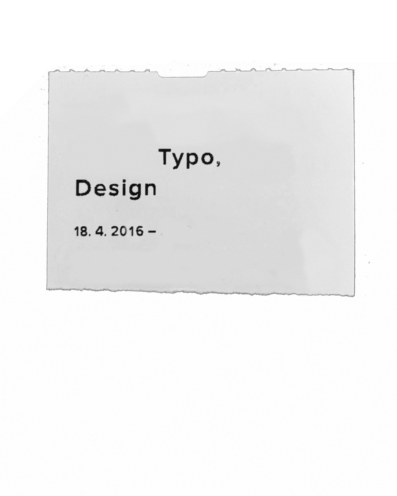

Beyond linguistics, I’m interested in graphic design and typography. I especially enjoy books – from cover concepts and illustrations to typesetting, layout, and even bookbinding, all connected by my interest in how text and image shape reading and perception.
If you would like to see my work, you can check out the latest version of my portfolio (2025) or follow me on Instagram, where I occasionally post. ★